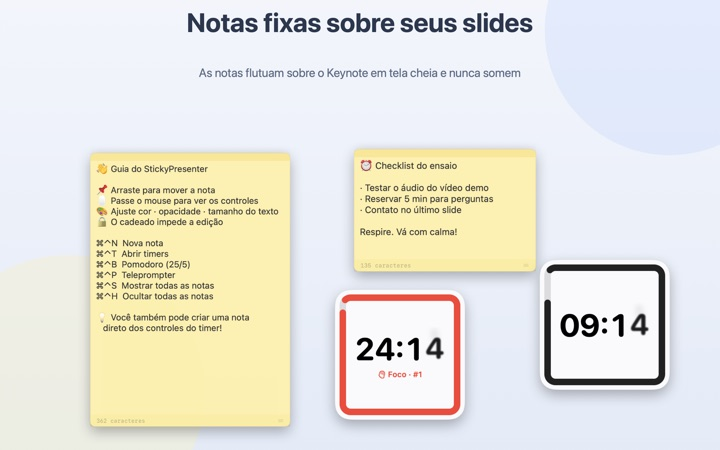
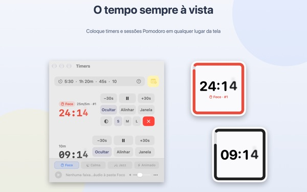
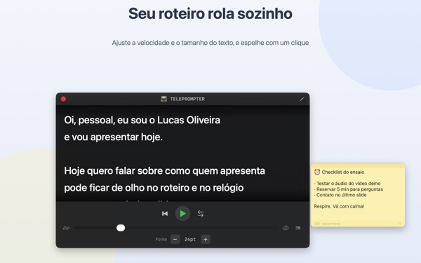
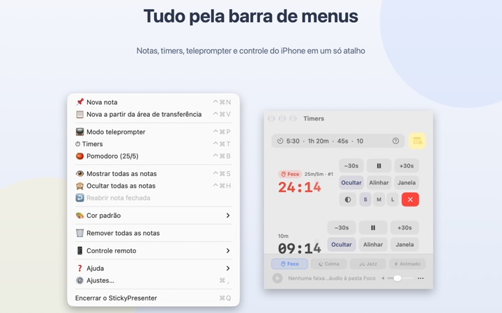

Seu roteiro e seu tempo,
em cima do slide
Coloque o Keynote em tela cheia e suas notas e o timer continuam ali por cima. Eles nunca tiram o foco do app de apresentação, então o passador continua mudando os slides normalmente.
Todos os recursos são grátis. Requer macOS 14 ou posterior.

Teste em cima de um slide
Digite um tempo do jeito que você faria no app. Toque em 15s para ver como o widget avisa quando o tempo está acabando.
Onde ficam o roteiro e o relógio enquanto você apresenta?
A visualização do apresentador pede uma segunda tela, e olhar o relógio de pulso é algo que a plateia sempre percebe. Talvez você já tenha colado um papelzinho no notebook e visto ele cair. O StickyPresenter fixa o roteiro e o tempo restante bem em cima do slide, onde seu olhar já está.
Uma olhada e você sabe quanto falta
Um widget quadrado no canto mostra o tempo restante. Ele fica vermelho quando o fim se aproxima e, quando o tempo acaba, toca um aviso e pisca a borda.
Digite o tempo do jeito mais prático, como 5:30 ou 1h 20m, ou 25/5 para um Pomodoro que alterna foco e pausa. Abra o timer numa janela própria para compartilhar só ela no compartilhamento de tela ou no AirPlay.

Leia o roteiro olhando para a câmera
O teleprompter rola o roteiro na velocidade que você escolher e para sozinho no final. Copie o roteiro, aperte ⌘⌃P e ele abre com esse texto.
Tem modo espelhado para teleprompters com vidro refletor, e a velocidade e o tamanho da letra continuam iguais na próxima vez.

Sem sair do slide
Ele roda discretamente na barra de menus, sem ícone no Dock e sem janelas para cuidar. Atalhos como ⌘⌃N para uma nota nova e ⌘⌃T para os timers funcionam até com o Keynote em tela cheia.
No palco, o app gratuito para iPhone Remote Controller for Sticky permite iniciar e pausar o timer, e tirar o widget da frente quando ele cobre um slide.

Três passos para começar
- 1
Abra o app
Um ícone de nota aparece na barra de menus e, na primeira vez, abre um guia rápido.
- 2
Crie uma nota e um timer
Copie o roteiro e aperte
⌘⌃V, depois digite a duração da sua fala no campo do timer. - 3
Coloque em tela cheia
A nota e o timer continuam por cima.
Atalhos e formatos de tempo
- ⌘⌃N
- Nova nota
- ⌘⌃V
- Nova nota com o que está na área de transferência
- ⌘⌃T
- Mostrar ou ocultar timers
- ⌘⌃B
- Iniciar um Pomodoro (25 min de foco, 5 de pausa)
- ⌘⌃P
- Teleprompter
- ⌘⌃S · ⌘⌃H
- Mostrar ou ocultar todas as notas
- 10
- Só um número significa minutos (10 min)
- 5:30 · 1:15:00
- Minutos:segundos, horas:minutos:segundos
- 1h 20m · 45s
- Com unidades
- 25/5
- Foco/pausa, repetindo até você parar
Todos os atalhos usam Command (⌘) e Control (⌃) juntos e funcionam mesmo quando você está em outro app. Os timers vão até 99:59:59.
Perguntas frequentes
É grátis mesmo?
Sim. Todos os recursos são grátis, e o app para iPhone Remote Controller for Sticky é outro app gratuito. Se ajudar você, dá para deixar uma gorjeta para o desenvolvedor nos Ajustes; ela não libera nada.
Dá para mostrar só o timer no compartilhamento ou espelhamento de tela?
Dá. Use o botão Janela na linha do timer para abri-lo como uma janela comum. Aí ele aparece na lista de janelas do compartilhamento de tela e do AirPlay, e você compartilha só ela.
Ocultei um widget e não acho mais.
Na janela de timers, passe o ponteiro sobre a linha daquele timer e a posição do widget aparece marcada com uma linha tracejada. Clique em Alinhar para trazê-lo de volta para perto da janela.
Fechei uma nota sem querer.
Use Reabrir nota fechada na barra de menus para recuperar qualquer uma das últimas 20. As notas são salvas enquanto você digita e voltam ao mesmo lugar quando o app reabre.
Um atalho não funciona.
Se a tabela de atalhos do guia mostrar Em uso por outro app, é porque outro app pegou o atalho antes. Feche esse app e ele volta a funcionar. Não precisa de permissão de Acessibilidade.
Por que o tema Camaleão pede permissão de Gravação de Tela?
O Camaleão lê a cor da tela atrás do widget para combinar com ela, e para isso precisa dessa permissão. Nada é salvo nem enviado. Sem ela, os temas Sistema, Claro e Escuro funcionam normalmente.
Como coloco música de fundo?
Escolha um clima (Foco, Calma, Jazz ou Animado) na barra de música na parte de baixo da janela de timers e o app cria uma pasta para cada um. Coloque suas músicas lá e elas tocam em ordem junto com o timer. O app não vem com músicas.
O controle remoto no iPhone não encontra meu Mac.
Confira nesta ordem: o StickyPresenter está aberto no Mac (procure o ícone na barra de menus); os dois aparelhos estão na mesma rede Wi‑Fi, não numa rede de convidados nem no 4G/5G; Rede Local está permitida para o app em Privacidade e Segurança, no iPhone e no Mac; a VPN está desligada.
O controle remoto diz que o código de pareamento está errado.
Digite o código de quatro dígitos que aparece agora em Controle remoto, na barra de menus do Mac. Se você clicou em Novo código de pareamento, só o novo vale. Depois do primeiro pareamento, ele conecta assim que você abre o app.
Outra pessoa pode controlar meu timer?
Não sem o seu código. O Mac só aceita controles que digitaram o código certo, por uma conexão direta e criptografada na sua rede local. Se alguém viu o código, use Novo código de pareamento ou Esquecer controles remotos pareados em Controle remoto, na barra de menus.
Onde ficam minhas notas e roteiros?
Só neste Mac. Não tem conta nem anúncio, e nada vai para a internet além de estatísticas de uso anônimas e do feedback que você decidir mandar.
Dúvidas, erros ou ideias? Escreva para mizzking75@gmail.com.